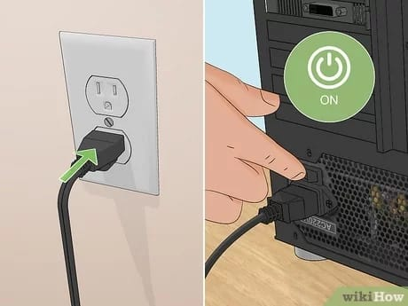
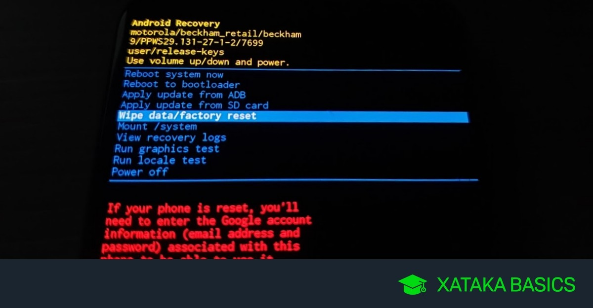
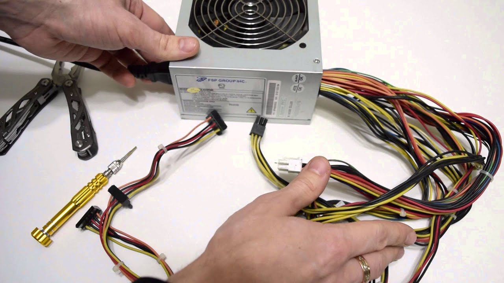
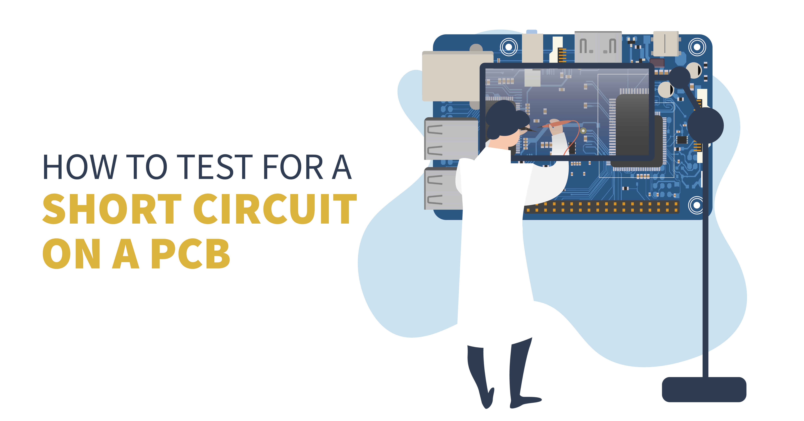
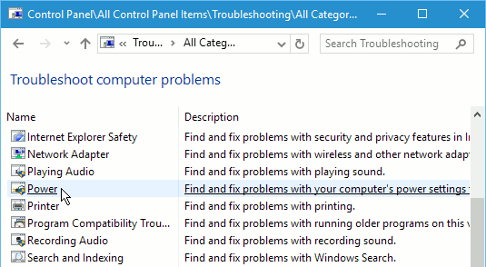

UNRESPONSIVE POWER BUTTON TROUBLESHOOT
If your laptop or device isn't turning on when you press the power button, there may be several reasons for this issue. Follow the steps below to troubleshoot the unresponsive power button and get your device working again:
Check these potential causes and solutions for an unresponsive power button:
- 1. Check the Power Source
Ensure the power cord is properly connected: If your device is not turning on, the first thing to check is if the power cord or adapter is securely plugged into both the device and the power outlet.
Check the outlet: Try plugging the device into a different outlet to rule out the possibility of a faulty power source.  - 2. Perform a Hard Reset
Disconnect the power: Remove the battery (if applicable) and unplug the power adapter. Hold the power button for 15-30 seconds to discharge any residual power.
Reconnect the power: Plug the adapter back in, and try turning on the device again.  - 3. Inspect the Power Button
Check for physical damage: Inspect the power button for any visible damage or debris that might be preventing it from functioning correctly. You can gently clean around it with a soft brush.
Test the button: If the button feels stuck, you may need to take it to a professional to check for internal damage. - 4. Test with External Power
Use an external power source: If you have a laptop, try running it directly off the AC power without the battery installed. This can help determine whether the battery or the power button is causing the issue.  - 5. Check for Short Circuits
Disconnect peripherals: If the power button still isn't working, disconnect all external devices like USBs, external hard drives, or accessories, and try again. Sometimes, external devices can cause a short circuit or prevent the system from powering on.  - 6. Inspect for Power Delivery Issues
Check the charging port: Ensure that the charging port is not damaged or loose. If the power connector is damaged, the device may not receive power properly.
Replace faulty parts: If the issue is with the power port or adapter, it may need to be replaced.  - 7. Reset BIOS Settings
Reset the BIOS: Sometimes, the BIOS can prevent the system from turning on due to incorrect configurations. Resetting the BIOS to default settings might resolve the issue.
Make sure to check for any hardware or software issues carefully, and if none of the steps work, consider consulting a professional technician for further assistance.